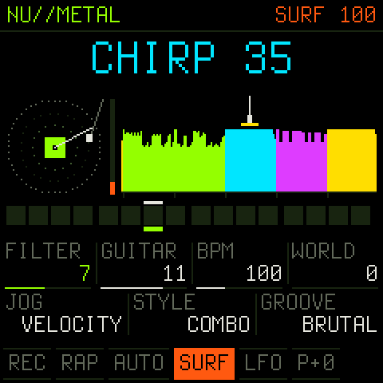
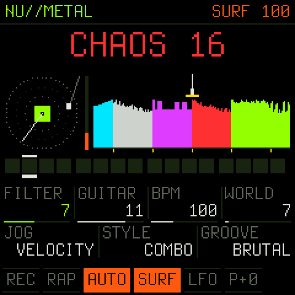
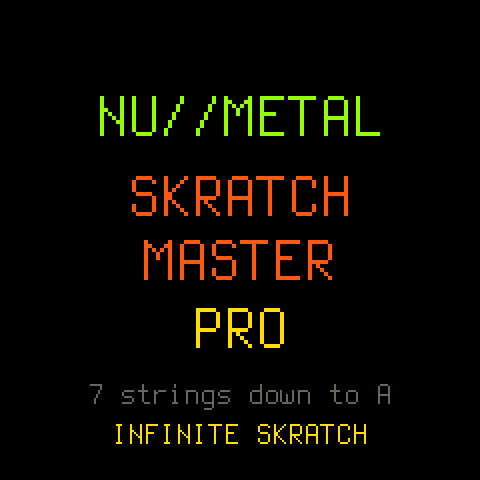
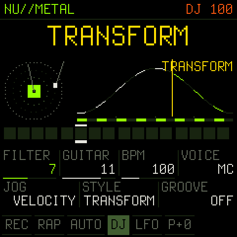
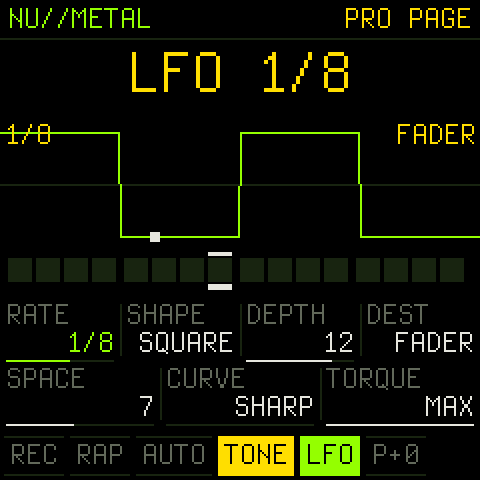
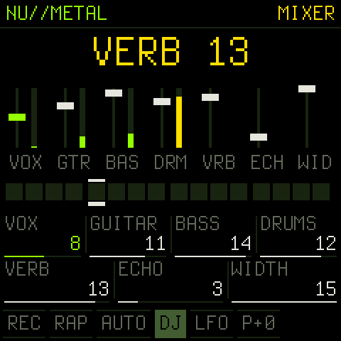

for the M-VAVE FM-1 · v3.0 · GPL-3
A robot turntablist, an endless record and a 7-string band in a pocket synth. Plug it in, drop the needle, flash it from this page.
Something went wrong? Hold OCT- while switching the FM-1 on. That starts only the updater, silent. Then hit INSTALL again. M-VAVE's official firmware can go back on any time. Flashing is at your own risk.
pulling the record off the shelf…
Install a package from your disk instead (your own build, or NU//METAL 1.0):
The FM-1 only has room for tiny samples, so 3.0 stops storing the record. In SURF mode the deck plays an endless record that is computed as you scratch it, from where the needle is and which WORLD you're in. Scratch back over a spot and it's the same sound again, like vinyl. Behind it, the band got heavier.



Your saved 2.x settings carry over. The first boot of 3.0 sets the tuning to drop A once.



SAM, the 1982 Software Automatic Mouth, says 27 words onto a virtual record and you cut them up with the keys and the jog wheel. Behind you: double-tracked 7-string guitars, a bass and a twelve-piece kit locked to twelve grooves. Switch on RAP MODE and the robot takes the mic.
| PLAY, then ARP | the band kicks in and the robot raps |
| tap / hold a key | say the word / scratch it in the STYLE you picked with ALGORITHM |
| turn SELECT | scratch by hand; flick it, let go, and the record keeps spinning |
| hold LFO + turn | the PRO page: rate, shape, depth, destination, reverb, curve, torque. Tap LFO for on/off |
| hold FX + turn | the MIXER. Tap FX for the next effect |
| HOME | DJ, BEAT (the kit on the keys), TONE (the keys as a pitch fader), SURF (the INFINITE record) |
| in SURF | KNOB4 = WORLD, EDIT + KNOB2 = FLOW, EDIT + KNOB4 = SURF drift, GLO = ETERNAL SKRATCH |
| PRESETS | the groove: OFF, BRUTAL TRUTH, BAD DAY, JUMP, BREAKDOWN, RAP METAL, BOOM BAP, STOMP, TRAP, SLUDGE, SEASICK, DIVEBOMB |
| hold EDIT | the second layer of every button, and the audio load |
Every control is in the README.